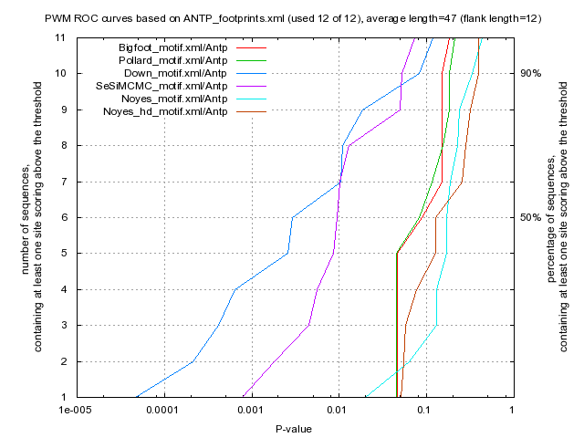

Kulakovskiy I.V., Favorov A.F., Makeev V.J. (2009) Motif discovery and motif finding from genome-mapped DNase footprint data. Bioinformatics 25(18): 2318-2325.
<up> DMMPMM motif ANTP comparison [dmmpmm_compare_html]
|  |
motif alignment
motif similarity
|
Bigfoot |
Pollard |
Down |
SeSiMCMC |
Noyes |
Noyes_hd |
| Bigfoot |
1.0 |
0.242 |
0.2917 |
0.2185 |
0.2255 |
0.2446 |
| Pollard |
0.242 |
1.0 |
0.297 |
0.2693 |
0.3157 |
0.2967 |
| Down |
0.2917 |
0.297 |
1.0 |
0.3801 |
0.2065 |
0.2367 |
| SeSiMCMC |
0.2185 |
0.2693 |
0.3801 |
1.0 |
0.2294 |
0.2483 |
| Noyes |
0.2255 |
0.3157 |
0.2065 |
0.2294 |
1.0 |
0.7689 |
| Noyes_hd |
0.2446 |
0.2967 |
0.2367 |
0.2483 |
0.7689 |
1.0 |
|